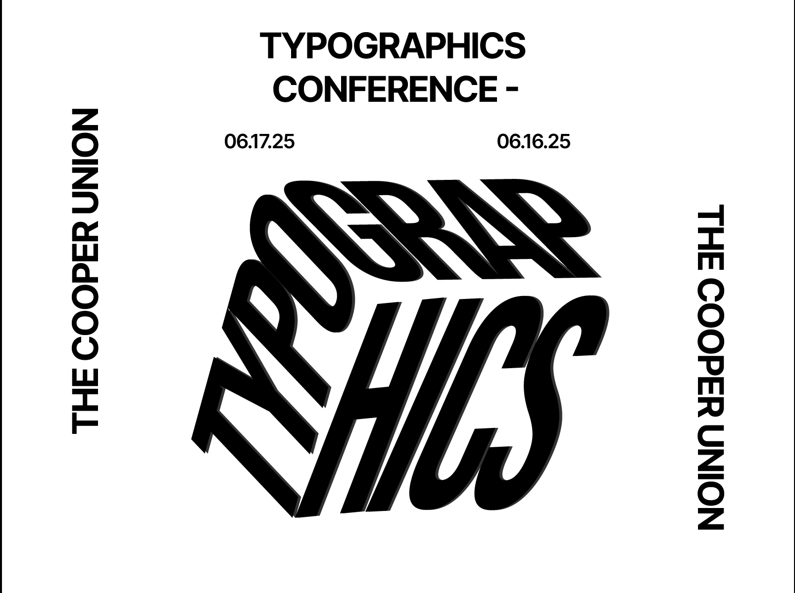
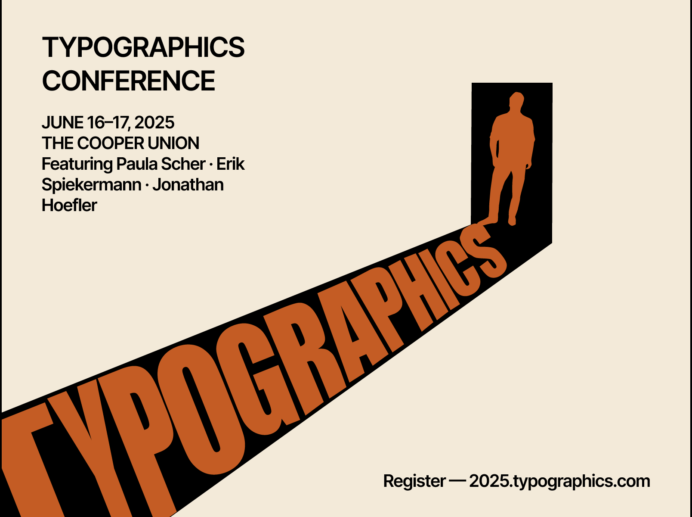
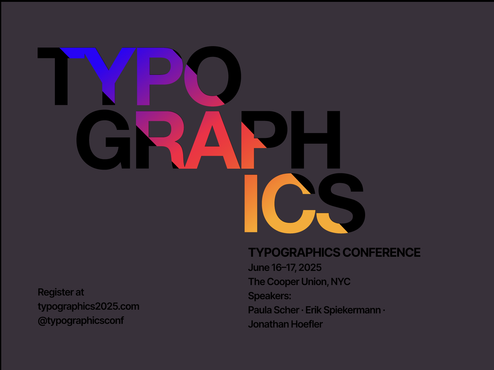

PROJECT 2
Typographic Hierarchy Posters
A digital typography assignment focused on creating three poster variations for the Typographics Conference, each with a distinct typographic hierarchy. The goal was to guide the viewer through the content using scale, position, contrast, and structure without relying on imagery.
Brief
Three poster variations, three different hierarchies
The assignment asked for three digital ad posters announcing a design speaker series at The Cooper Union. Each concept needed to use a unique typographic hierarchy and a clearly identifiable system that guided the viewer through the information.
The brief also required original and engaging layouts, horizontal format, full-colour RGB, and the use of graphic elements rather than imagery.



Design Direction
Exploring hierarchy through contrast, scale, and composition
For this project, I wanted each poster to feel visually distinct while still responding to the same content. Instead of repeating one system three times, I treated each concept as a different way of prioritizing information.
One variation emphasized expressive form and visual distortion, another used directional composition and bold contrast, and the third explored a more layered and graphic approach through overlap, color, and placement.
Feedback
Strong visual interest, but missing some required information
Feedback on the work noted that the posters were intriguing and visually compelling, and that the hierarchy was effective. The main issue was that not every poster included all of the information from the copydeck.
Looking back, this project taught me that strong visual hierarchy is not only about making type feel expressive. It also needs to balance style with completeness, clarity, and full communication of the content.
This project pushed me to think of hierarchy not just as size differences, but as a full system of emphasis, movement, and reading order.